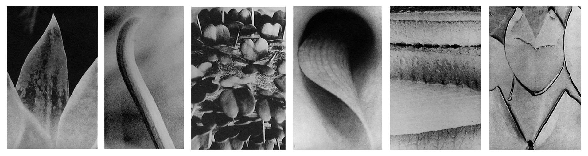
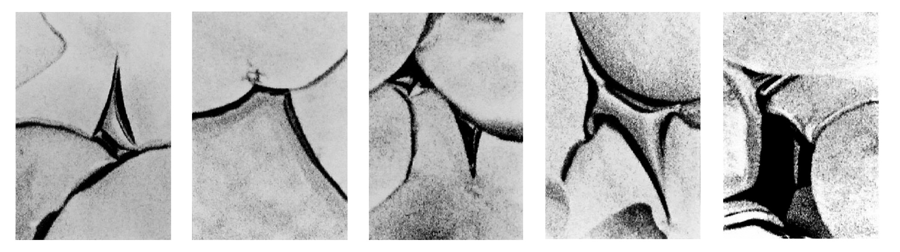
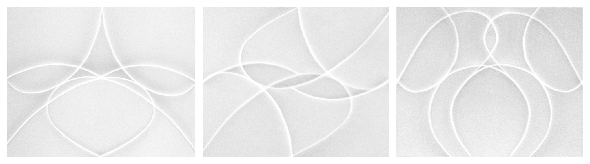

This project started during the early 90ties, with a semantics research on abstract photography. The results of this research was the spark that gave me the idea to try and grasp the functionality of abstraction. It was then, that I started building the pictures of the installation ”Secret Places” (1996).

The next step was an effort to discover the secret nature of abstraction in photography. At this level, the image of the world as we know it disappears completely into two-dimensionality. Through the de-construction of the image, the chosen themes become ”archetypes”. Those archetypes cannot be perceived by pure intellect any more. They become imaginary objects. They can transfer the spectator to a fictional world. Words are not necessary, since the image is a powerful substitude.
”Nature I” is a part of the results of this research.

The last step is reconstruction. Building a photogenic object based on the knowledge of the previous research. The abstraction here becomes totally concrete due to the artist's manipulations. The images are left without interpretation. They transform their meaning purely on aesthetic grounds. The absence of recognition of the constructed object doesn't matter anymore. Its mater and meaning can remain a secret of their creator.
Lack of a definite answer is also an answer, until someone finds another…
”Evolution” was the last part of ANIKON research. The whole project finished at the beginning of 1998.

(analog B&W photography)